Ein Tor entscheidet: Papst-Elf lässt gegen Wingerode Punkte liegen
Es war mehr möglich an diesem Sonntagnachmittag. Unsere zweite Mannschaft musste sich der SG SV Schwarz-Rot Wingerode auf dem Kunstrasenplatz am Gesundbrunnen mit 0:1 (0:0) geschlagen geben. Vor 99 Zuschauern entschied Tobias Künzel die Kreisoberligapartie mit seinem Treffer in der 62. Minute. Für die Papst-Elf blieben eine unnötige Heimniederlage und die Enttäuschung darüber, aus diesem Spiel nichts mitgenommen zu haben.
Ohne Tore in die Pause
Mit Wingerode kam der Tabellenführer an den Gesundbrunnen. Die Gäste hatten ihre ersten fünf Ligaspiele gewonnen und dabei lediglich zwei Gegentore zugelassen. Unser Kreisoberligist ging mit drei Siegen aus vier Begegnungen in das Duell. Die Ausgangslage versprach also einiges, auch weil beide Mannschaften in den bisherigen Saisonspielen regelmäßig getroffen hatten. Auf das erste Tor mussten die Zuschauer diesmal allerdings länger warten. Die gesamte erste Hälfte blieb ohne Treffer. Damit ging unsere Mannschaft mit einem 0:0 in die Pause und hatte weiterhin jede Möglichkeit, dem Spitzenreiter Punkte abzunehmen. Weder für den SCH noch für die Gäste war nach diesen ersten 45 Minuten etwas entschieden.
Künzel trifft nach einer guten Stunde
Auch nach dem Seitenwechsel blieb der Spielstand zunächst unverändert. Erst in der 62. Minute fiel der Treffer, der diesen Nachmittag entscheiden sollte: Tobias Künzel brachte Wingerode mit 1:0 in Führung. Für die Blau-Weißen bedeutete das, nun einem Rückstand hinterherlaufen zu müssen. Bis zum Ende der regulären Spielzeit blieb noch knapp eine halbe Stunde für eine Antwort. Am Ergebnis änderte sich anschließend nichts mehr. Unserer Zweiten gelang kein Ausgleich, die Gäste nahmen mit dem knappen Erfolg alle drei Punkte mit.
Eine Niederlage, die ärgert
Gerade solche Ergebnisse tun weh. Ein einziges Gegentor reichte, um die Partie gegen unsere Papst-Elf zu entscheiden. Die Einschätzung fällt entsprechend klar aus: Diese Niederlage war unnötig.
Dass der Gegner als Tabellenführer angereist war, macht das Ergebnis nicht weniger ärgerlich. Für unsere Mannschaft bleibt vor allem die verpasste Gelegenheit, zu Hause etwas Zählbares mitzunehmen. Wingerode baute seine Bilanz dagegen auf sechs Siege aus sechs Spielen aus. Die Blau-Weißen stehen nach fünf Begegnungen bei drei Erfolgen und zwei Niederlagen.
Am Sonntag nach Arenshausen
Am Sonntag, 4. Oktober, tritt unsere Zweite um 11:30 Uhr auswärts bei der DJK Arenshausen an. Dort soll die Enttäuschung über diesen Nachmittag einer besseren Ausbeute weichen. Für Daniel Papst und seine Mannschaft geht es darum, die Heimniederlage aufzuarbeiten und sich anschließend wieder Punkte zu holen.
Spieldaten
1. SC 1911 Heiligenstadt II – SG SV Schwarz-Rot Wingerode 0:1 (0:0)
SC Heiligenstadt
Lerch – Kaufhold – Wibe (77. Rasho) – Simon – Weilandt – Semper – Jargees Ali (65. Ungewitter) – Schäfer (74. Rohner) – Kahlmeyer – Dornieden – Pingel (70. Weidemann)
SG SV Schwarz-Rot Wingerode
Kuna – Senft – Simon (86. Thrien) – R. Marx – Stripling (89. C. Märkl) – Günther (71. Schütze) – P. Künzel – T. Künzel – Oppermann – Hoffmann (71. Bouhafa) – M. Märkl
Schiedsrichter
Redemann
Zuschauer
99
Tore
0:1 Künzel (62.)
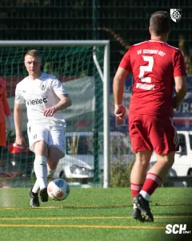
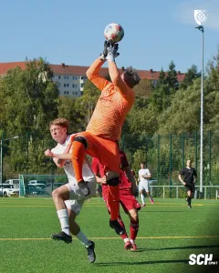
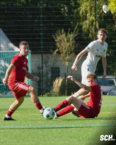
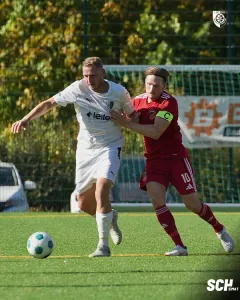
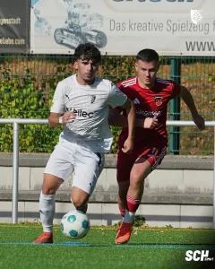
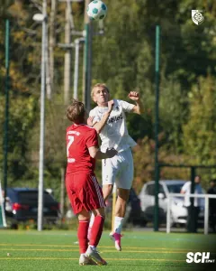
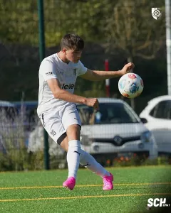
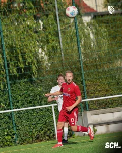
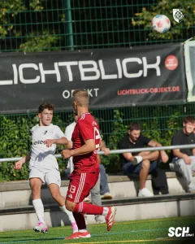
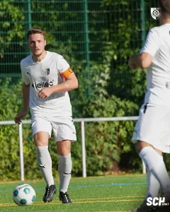
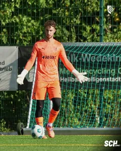
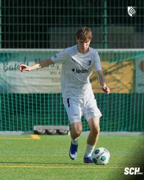
Quelle: www.sc1911-heiligenstadt.de · Stand 06.10.2026